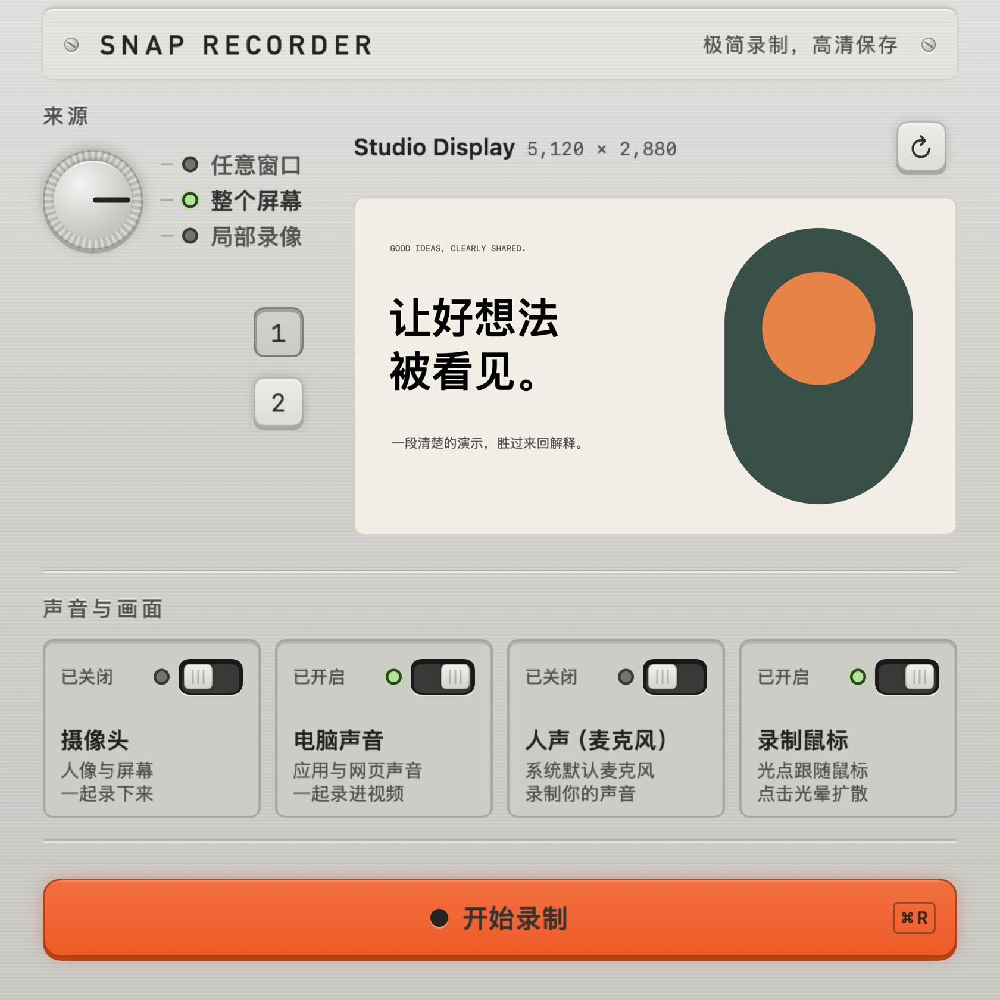
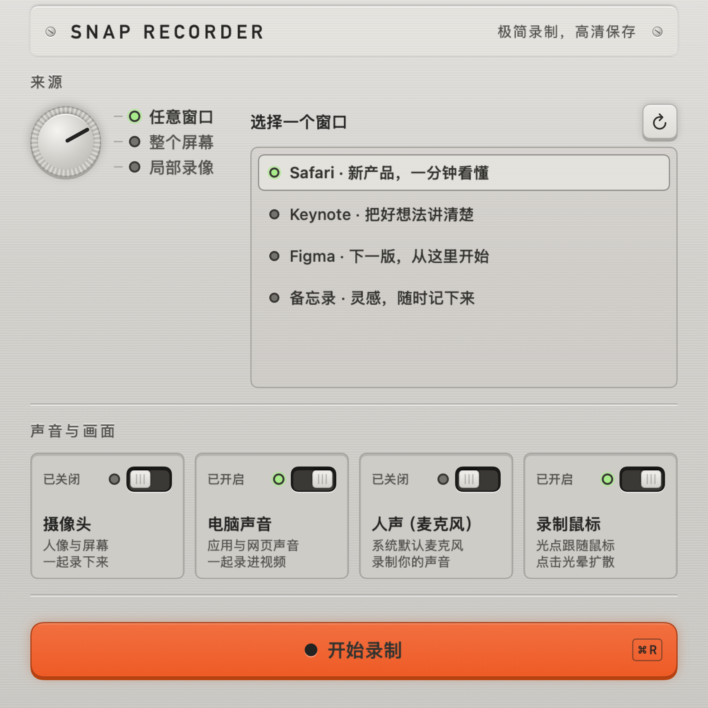
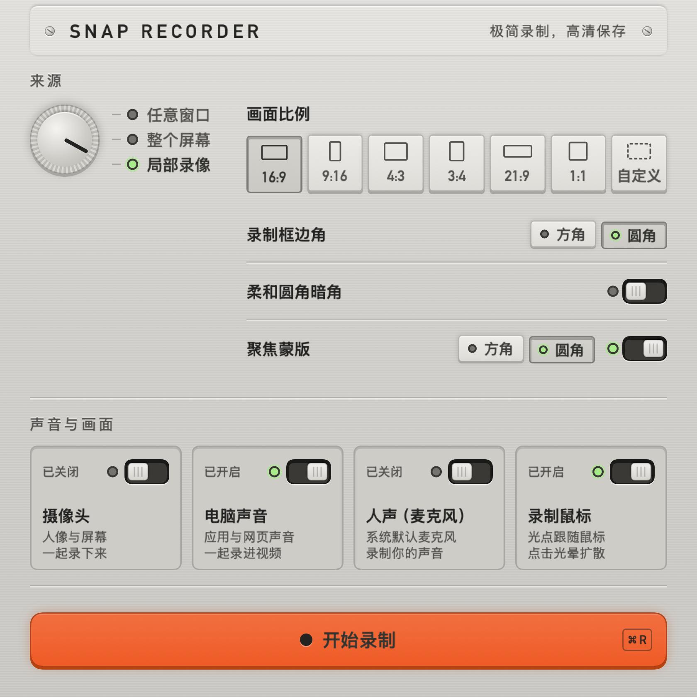
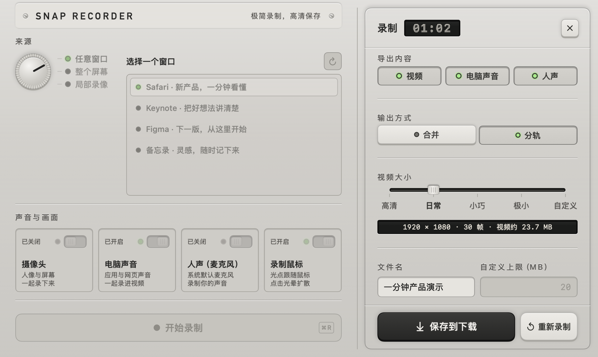
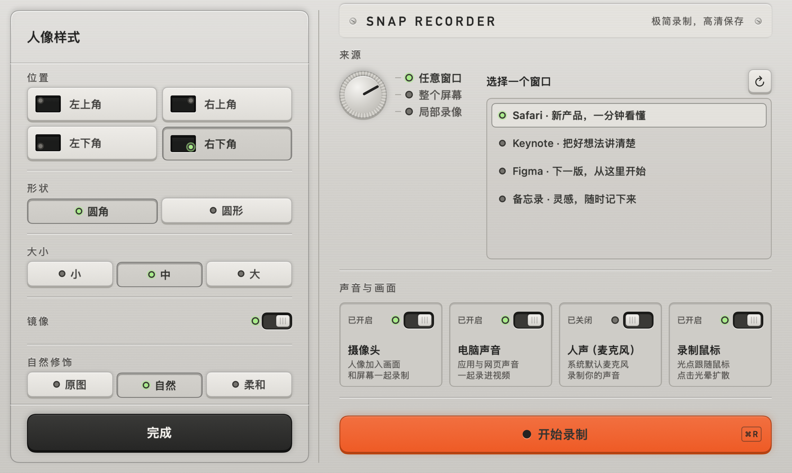

多屏演示，选对主场。
缩略图确认画面，多显示器随手切换。


01 / RECORD
一个窗口，一块屏幕，或你框出的那一部分。
完整保留比例，把无关的画面留在外面。
缩略图确认画面，多显示器随手切换。

横屏、竖屏、自由比例，再加一点聚焦。

02 / EXPORT
演示视频、独立人声、轻巧分享版。
换个组合，再导出一份，不必重录。

视频、电脑声音、人声，合并或分轨；也能只保存音频。
四档大小随手选。有体积限制，直接填写视频 MB 上限。
保存后继续换设置导出，已有文件自动避让。
03 / PRESENT
人像随画面同行，鼠标点亮操作重点。
让观众看见你，也跟得上每一步。

四角位置、圆形或圆角、三档大小与镜像。
原图、自然、柔和，按需选择，只处理摄像头画面。
鼠标准星与点击波纹，配合局部聚焦，突出操作重点。
LOCAL FIRST. ALWAYS.
不用登录，不用上传。
画面、人像和声音全在本机处理，
文件直接保存到「下载」。
随时暂停，不满意就重来。
SMALL TOOL. CLEAR IDEAS.
解压后拖入「应用程序」，首次使用允许屏幕录制。摄像头和人声按需授权。应用尚未经过 Apple 公证，如首次启动被拦截，可在「系统设置 → 隐私与安全性」中允许打开。
完整产品说明 ↗